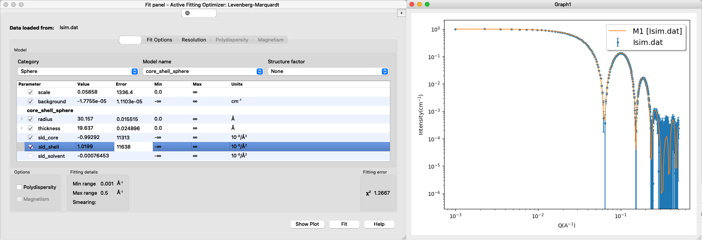
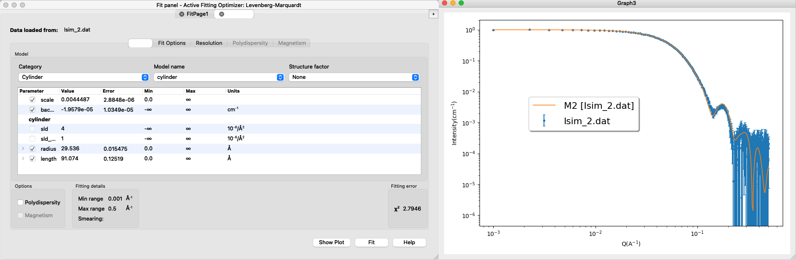
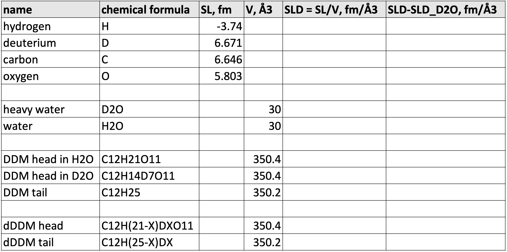

Home
Tutotial: Contrast Variation
Tutorial contributors: Andreas Haahr Larsen
Before you start
- Download and install SasView (needed for Part 2 and 3)
Learning outcomes
- Understand contrast variation in small-angle neutron scattering (SANS)
- Design a contrast match experiment
Part 1: Monodisperse spheres with various contrasts
Go to: Shape2SAS, and simulate a spheres with a 50 Å radius and contrast (ΔSLD) of 1 as model 1 and a sphere with contrast -1 as Model 2 (set parameters and press Submit)
Comment on the resulting scattering. Try to vary the contrast. In Shape2SAS, the forward scattering, I(q=0), is normalized to unity, but how would a numerically larger ΔSLD be observable in an experiment? (Hint)
Part 2: Core-shell spheres
Go to: Shape2SAS, and simulate a spherical core-shell particle with inner radius of 30 Å and core ΔSLD of -1, and outer radius of 50 Å and shell ΔSLD of 1.
Comments on the results. Try to compare with a sphere with radius 30 Å or 50 Å (as Model 2). Adjust the radii of the core-shell particle to get an I(0) of 0. (Hint)
Download the simulated data for Model 1: Isim.dat (example data).
Load into SasView and fit a core-shell sphere form factor. The result may look like this:
Are the fitted values the same as the input values? Can you fit with different combinations of sld_core, sld_shell and sld_solvent? why (not)? (Hint)
What happens if you fit both sld_core, sld_shell and sld_solvent? why? (Hint)
Part 3: Virtual contrast-variation experiment
This part is inspired by Midtgaard et al 2018, where a detergent DDM is matched-out in SANS to get the scattering from a membrane protein without the detergent signal.
Go to: Shape2SAS, and simulate a cylinder with radius 30 Å and length 90 Å and ΔSLD of 2. This cylinder is our highly simplistic model of an integral membrane protein
The transmembrane part of the protein is hydrophobic, and would therefore needs to be solubilized in an actual experiment.
In Shape2SAS, make as Model 2 a cylinder as before, but this time surrounded by a ellipsoidal core-shell particle, which is a model for a detergent micelle:
Input parameters and output could look like this:
We consider the situation, where the scientist is interested in finding the shape of the protein (here: the cylinder), and not the detergent micelle (here: the core-shell ellipsoid).
The whole system (protein+micelle) can be fitted simultaneously (see, eg., Perez and Koutsioubas, 2015), but the shape can be determined more precisely, if the scattering signal from the micelle could be removed.
This can be achieved in SANS, by deuteration. First step is to partly deuterate the detergents, so head and tailgroups have the same scattering, i.e. replace some H's by D's.
Make a naive simulation of this, by changing the ΔSLD of the ellipsoid to the same value, e.g. 3.
Now, simulate that the solvent is replaced from H20 to D20. Simulate this by decreasing the ΔSLD of all elements by 3, so the ΔSLD of the ellipsoid is 0 and ΔSLD of the cylinder is -1. Now compare with Model 1 (protein without detergent).
Download the simulated data for Model 2 (with contrast-matched DDM): Isim_2.dat (example data). Load into SASView and fit with a cylinder form factor.
The result may look like this:
OBS: the simulated data is made with a finite number of points and placed at random in the user-defined volume, so the the fits are not perfect. (Not unlike a fit to experimental data).
Part 4: Match-out DDM in 100% D2O
The goal here is to calculate how much to deuterate a DDM detergent in order to match it out in a SANS experiment at 100% D2O. Using a spreadsheet will be useful.
Use the chemical formulas to calculate the neutron coherent scattering lenghts for heavy water (D2O), DDM headgroups (C12H21O11) and DDM tailgroups (C12H25), using NIST tabular values.
Use experimentally determined molecular volumes to calculate SLD and ΔSLD = SLD-SLDD2O for heavy water (30.0 Å3), DDM headgroups (350.4 Å3) and DDM tailgroup (350.2 Å3).
7 Hs from the DDM headgroup are exchangable, i.e, when DDM is dissolved in D2O, these Hs spontaneously exchange with Ds from the solvent. There are no exchangable Hs in the tailgroup (i.e. they are tightly bound). Calculate the SLD and dSLD of the DDM headgroup after exchange (C12H14D7O11).
OBS: find the average values - no need to reach an integer number. Why is this ok, experimentally?
Why is it better to match in D2O rather than H2O as solvent? (Hint)